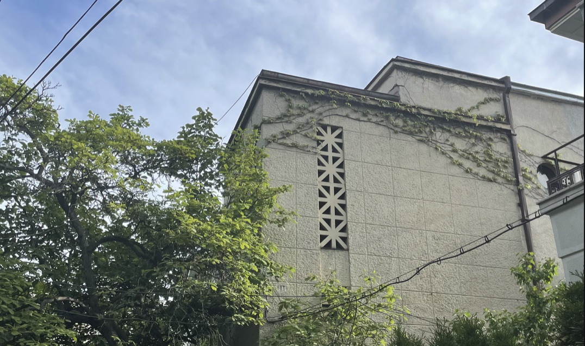

my thoughts about life
----------------------------------------------------------------------------------------------------------------------------------
Life is defintely something, in fact it's everything, everything you will ever experience/feel/see/hear/recall/observe/interact with/contribute to, many people rightfully spend a lot of time searching for the meaning of life, and while I can hardly believe anyone found it, here are some thoughts and notes about life I personally would like to share:
1. Experiences are everything and the key to happiness / you never know until you try: yes, your local drug dealer was sorta right when he said "dont knock it till you try it", but not as a way to peer pressure people into getting addicted, but rather as a moral of life, I personally prioritize the finding of new novel experiences in life, this is how you find what you truly love and enjoy, try doing as many things as possible, go to as many places as possible, be as many different things as possible, talk to and meet as many people as possible, you have at least something to learn from everyone and every being tells a story, by doing and trying as many things as possible you will more likely find what makes you happy, and if not at least by the end you will have tried everything and you will have great stories to tell, the smartest and most cultured people alive became smart by reading and talking to people, learning from their stories and having as much contact with every idea as possible, you have nothing to gain from staleness and routine but nausea and rot
2. Grinding is bullshit and a sure fire way to make you unhappy and miserable, even if rich: I once heard someone say "grind your twenties so you can party your thirties", I couldn't help but cackle at this dumb idea, when I asked for clarification I got the following explanation: "by your thirties youll be rich and you'll be partying with sucessful people", which made the whole thing even worse, why waste your most beautiful years on making money, as long as you make ends meet and a bit more for personal commodities, I geniuenly don't see the point of being rich, it brings no extra value to life except materialism and superficiality, most rich people are (un)surprisingly very miserable, I would much rather simply live my youth as best as I can and make memories, I personally see finding true love in your twenties a much better goal and a more fullfilling accomplishment that will make you happy, life isnt about being the best, it's about being happy
----------------------------------------------------------------------------------------------------------------------------------
[back]